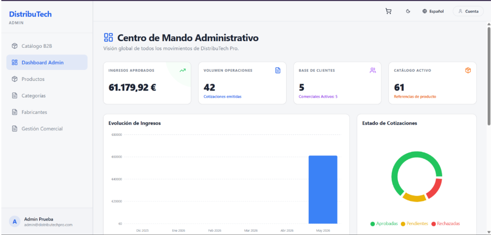

DistribuTech Pro: cotizaciones y pedidos B2B
Aplicación para un distribuidor de material técnico (ferretería, fontanería, riego, baño e industrial). Los clientes piden presupuestos, los comerciales los revisan y el administrador gestiona el catálogo. Hay tres roles y los permisos se aplican en la propia base de datos.
Catálogo con atributos JSONB
Las especificaciones técnicas de cada producto (material, presión, medidas) se guardan en JSONB, sin una tabla distinta por sector.
De cotización a pedido
El cliente arma un carrito y lo envía al comercial, que lo aprueba, lo rechaza o lo convierte en pedido.
Roles y Row Level Security
Cliente, comercial y administrador: cada rol solo ve y modifica lo que le corresponde, también a nivel de fila en PostgreSQL.
Panel, PDF y dos idiomas
Gráficas con Recharts, gestión de productos y fabricantes, PDF con jsPDF e interfaz en español e inglés.
Supabase en lugar de un backend propio
Empecé con un monorepo con servidor propio y lo unifiqué en una aplicación React que usa Supabase directamente. Hay menos código que mantener, pero la seguridad depende de escribir bien las políticas RLS.
JSONB para las especificaciones
Cada sector tiene atributos distintos. JSONB evita una tabla por familia de producto, a cambio de validar el formato en la aplicación y no en la base de datos.
Lo que haría distinto
Añadir pruebas automáticas e integración continua desde el principio: ahora mismo el proyecto no tiene tests. Es mi siguiente paso con este repositorio.
Prueba la demo con cuentas de prueba
cliente@distributechpro.comCliente1324!comercial1@distributechpro.comComercial1234!admin@distributechpro.comAdmin1234!Entorno de pruebas público: otras personas pueden haber modificado los datos y la primera carga puede tardar unos segundos. Las mismas cuentas están en el manual de usuario del repositorio.